Mobile-first Vaccine Scheduler Case Study
Bootcamp Project, 2023
Table of contents
- Background
- Goals
- Competitive analysis
- Generative research
- How-might-we and POV statements
- Personas
- Information architecture
- Interaction design
- UI design
- Prototyping and testing
- Iteration
Background
Gustus Clinic is a brand new (and fictional) clinic that is still building their website. Offering care in multiple locations throughout the northeastern US, they aim to develop a function on their website that allows users to schedule vaccine appointments near them. We hypothesize the following:
- By providing an efficient and easy-to-use booking system, users will be able to successfully book an appointment.
- If appointment times populate earliest availability and nearest location, users will find value in the product.
Goals
We want to know what users prioritize and value in their decision-making for scheduling vaccine appointments so that we can understand how to implement a convenient and easy-to-use vaccine appointment-booking feature that maximizes user satisfaction.
- To understand how to design a vaccine appointment booking site for a clinic that is efficient, flexible, and convenient
- To comply with mandatory COVID-19 protocols (e.g., screening questions)
- To assess whether a user's insurance will be accepted
- To display sites by nearest location and earliest availability
Competitive analysis
Through a competitive analysis, the strengths, weaknesses, opportunities, and threats (SWOT) of CVS, Walgreens, Rite Aid, and Vaccines.gov were assessed to help inform design decisions. All four competitors share common strengths in that they populate a list of all vaccination sites' phone numbers and addresses; however, CVS and Vaccines.gov only display options to receive COVID-19 and flu. Walgreens and Rite Aid offers patients the ability to get vaccinated against other diseases (not merely COVID-19 and flu). CVS and Walgreens also offers users the ability to schedule multiple vaccines on the same day.
Rite Aid forces users to select whether they would like to receive the Moderna or Pfizer brand, but they do not have the option to select 'no preference'.
Generative research
User interviews
User interviews were conducted to assess how users book vaccine appointments. They are an ideal generative research method, as they allow for probing and follow-up questions. As the sample size is small, writing a survey would not be necessary. Findings from the eight users who we interviewed include:
- Participant 1: Struggled with insurance in the past. Puts off appointments if the technology is not working. Relies on text reminders. Does not care about brand. Not confident in answering questions about health or insurance.
- Participant 2: Does not need text reminders but values them. Is able to recall her vaccine history. Prefers Pfizer but not strongly. Confident about answering questions about health or insurance. Keeps records of medical and insurance information.
- Participant 3: Relies on his wife to schedule appointments. Relies on text reminders. Does not care about brand. Confident about answering questions about health or insurance.
- Participant 4: Parents scheduled most of her appointments. Relies on text reminders. Does not care about brand. Confident about answering questions about health or insurance.
- Participant 5: Prefers to get vaccinated at CVS for convenience with the pharmacy. Is able to recall her vaccination history. Prefers Moderna but not strongly. Confident about answering questions about health. Not confident about answering questions about insurance.
- Participant 6: Relies on text reminders. Does not care about brand. Confident about answering questions about health and insurance.
- Participant 7: Does not struggle with booking vaccine appointments due to employment in healthcare. Does not prefer to get multiple vaccinations on the same day. Avoids J&J. Not confident about answering questions about health and insurance.
- Participant 8: Does not prefer to get multiple vaccinations on the same day. Writes appointment reminders on paper. Avoids J&J. Confident about answering questions about health. Not confident about answering questions about insurance.
Insights
- Value proximity and immediacy of appointments
- Appreciate guidance for selecting a vaccine
- Do not struggle to pay for vaccines
- Struggled to book an appointment during the beginning of the COVID-19 pandemic
View the affinity map in Miro.
How-might-we and POV statements
How-might-we statements
How might we help users...
- Locate a nearby clinic?
- Schedule a vaccination appointment within at least one week?
- Schedule multiple vaccines per visit?
- Remember their upcoming vaccination appointments?
- Troubleshoot if they need assistance?
POV statements
We would like to offer users a quick and easy way to schedule vaccine appointments…
- by proximity
- by earliest availability
- for multiple vaccinations at once (if the user requests it)
- with appointment reminders
- without technical difficulties
Personas
Personas were crafted with insight obtained from user interviews. They served as a reference for feature prioritization.
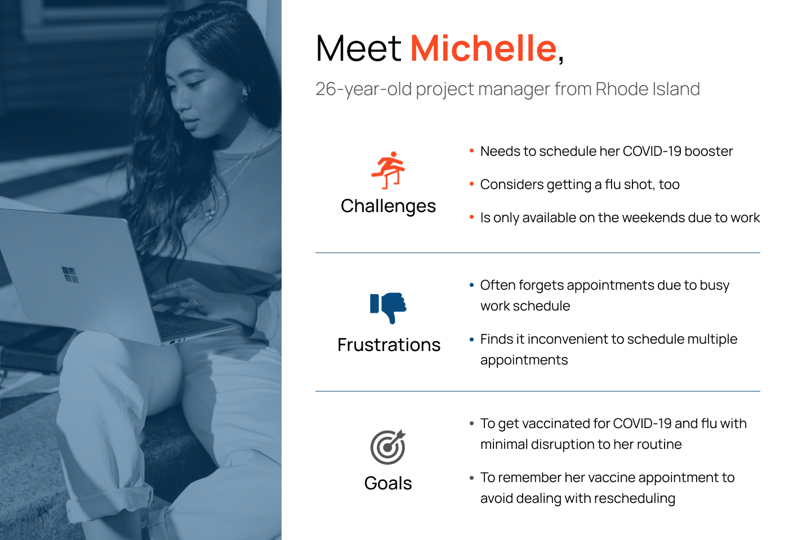
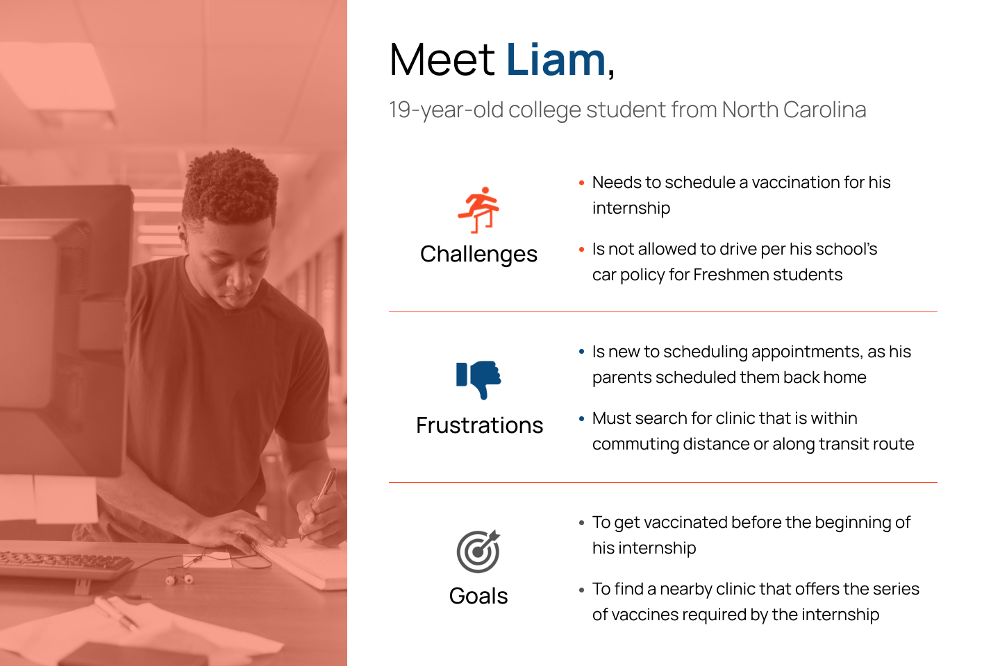
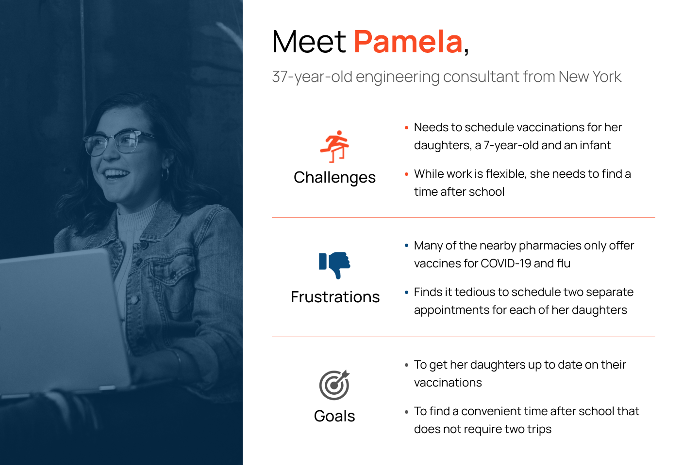
Information architecture
A card sort was used for organizing information architecture and evaluate the importance of each card (40 cards total; n=3). Data were analyzed in Maze.
The information architecture was sorted into four categories:
- Account
- Schedule an appointment
- Resources
- Contact us
All three participants agreed that the following cards should be sorted into Account:
- Clinical History
- Delete Account
- Log In
- Log Out
- Payment
- Register
- Vaccination Records
All three participants agreed that the following cards should be sorted into Schedule an Appointment:
- COVID-19
- Flu
- Meningitis
- Shingles
All three participants agreed that the 'FAQs' card should be sorted into Resources. The names of cards whose categorization participants did not agree upon will be reevaluated. Select examples of cards whose categorization did not reach consensus among participants included:
- Insurance
- Recommendations
- Reschedule Appointment
- Lost COVID-19 Vaccination Card
- Terms and Conditions
- Prescribing Information
- Privacy
Interaction design
Low-fidelity wireframes
The landing page was designed to be minimalist, preventing users from having to scroll to find what they need. CDC and COVID-19 information was intended to be easy to locate. Incorporation of visuals allow users to quickly scan prompts without much focus.

Mid-fidelity wireframes
Wireframes were digitized in Figma, focusing only on steps to schedule an appointment (for the purposes of this bootcamp project). An interactive calendar was implemented as a visual means of scheduling the date and time of appointment.
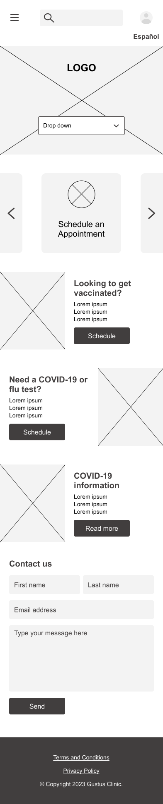
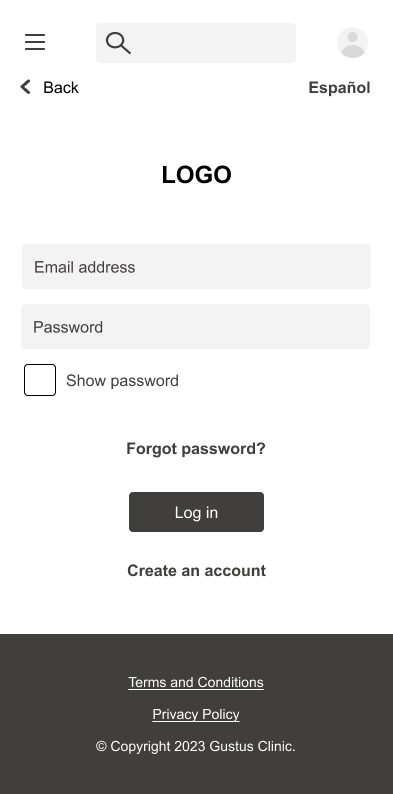


 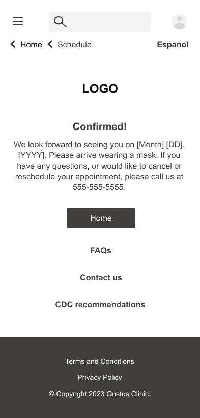
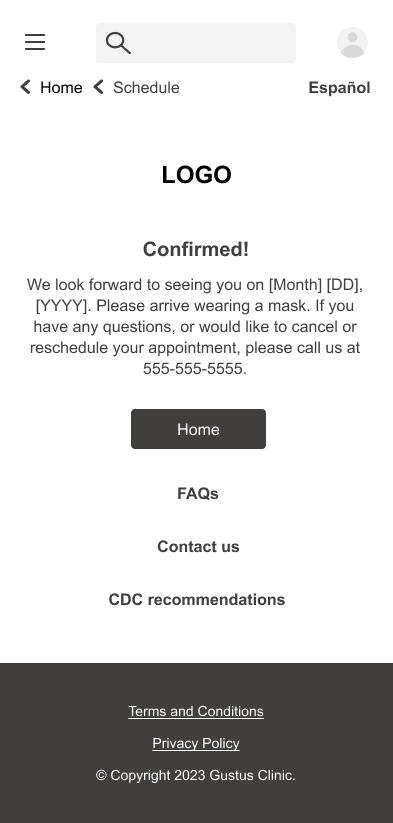
UI design
High-fidelity wireframes
Red was chosen as the primary color to convey brand themes of caring and compassion. Teal was chosen as the secondary color to convey calmness, as scheduling online healthcare appointments can be stressful. Segoe UI was chosen as the font for its simplicity and legibility.
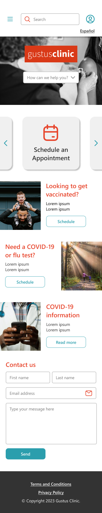
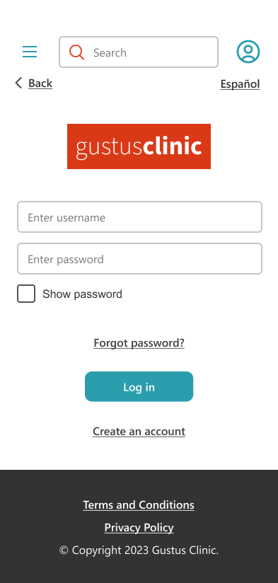


 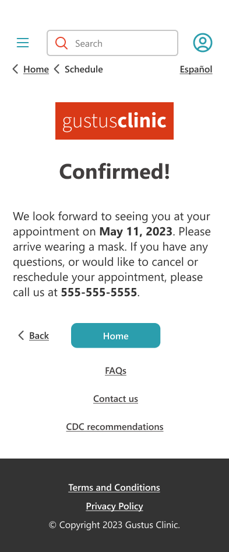
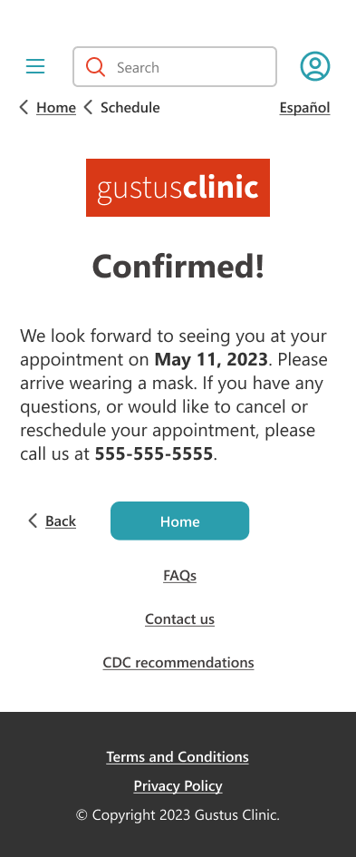
Prototyping and testing
A prototype evaluated whether users could successfully schedule an appointment without guidance both for themselves and on behalf of someone else (n=5).
Key findings
- Three users were able to schedule one of their appointments, but two users did not notice the option to schedule another patient.
- Three users encountered a technical error in Figma. Certain elements were not interactive on the their end despite functioning correctly in the Figma app.
- Three users expressed confusion on the placement of the ‘Schedule another patient’ button, and two users suggested moving it to the confirmation screen.
- One user mentioned that it would be useful to see their appointment time on the confirmation screen.
- One user called attention to the fact that it is currently impossible to schedule more than two patients.
- One user expressed that the abundance of scheduling buttons on the homepage was confusing, not helpful.
Higher priority action items
- Troubleshoot prototype for technical errors.
- Move the ‘Schedule another patient’ button to the confirmation screen.
- Display the appointment time on the confirmation screen.
Lower priority action items
- Utilize more visuals and cut down on text.
- Delegate each bucket of questions its own screen
- Remove redundant buttons from the homepage.
Iteration
The UI and interactions were revised. At a high level, revisions included:
- Solving technical errors in Figma.
- Reducing redundancies on the home screen.
- Improving the visual design.
- Replacing teal secondary colors with purple to improve readability.
- Altering copy and relocating some buttons on the form and confirmation screen.
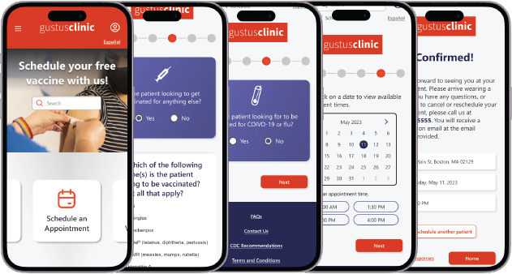
Get in touch!
603-686-4879
d96prior@gmail.com